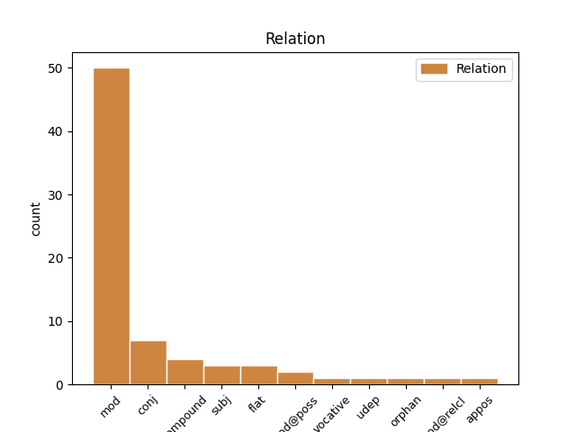
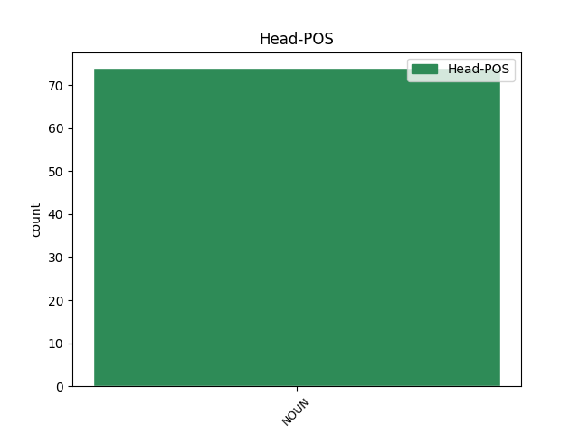
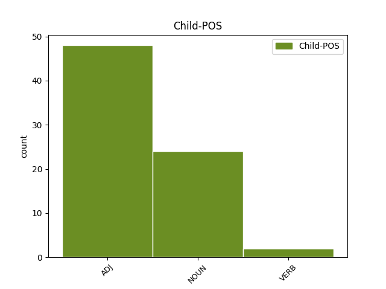

Distribution of features within this leaf



Agreement Rules sorted by frequency.
- When the dependent token is the modifer(mod) of the head token, and the head token is NOUN and the dependent token is ADJ.
1 पलीकडे _ _ _ _ 0 _ _ _
2 None _ _ _ _ 0 _ _ _
3 None _ _ _ _ 0 _ _ _
4 लहानसा लहानसा ADJ _ Case=Nom|Gender=Masc|Number=Sing 5 mod _ _
5 गोठा गोठा NOUN _ Case=Nom|Gender=Masc|Number=Sing 0 _ _ _
6 होता _ _ _ _ 0 _ _ _
7 . _ _ _ _ 0 _ _ _
1 खरोखरच _ _ _ _ 0 _ _ _
2 त्या _ _ _ _ 0 _ _ _
3 None _ _ _ _ 0 _ _ _
4 None _ _ _ _ 0 _ _ _
5 None _ _ _ _ 0 _ _ _
6 None _ _ _ _ 0 _ _ _
7 जीव जीव NOUN _ Case=Nom|Gender=Masc|Number=Sing 0 _ _ _
8 की _ _ _ _ 0 _ _ _
9 प्राण प्राण NOUN _ Case=Nom|Gender=Masc|Number=Sing 7 conj _ _
10 प्रेम _ _ _ _ 0 _ _ _
11 होते _ _ _ _ 0 _ _ _
12 . _ _ _ _ 0 _ _ _
1 इतक्यात _ _ _ _ 0 _ _ _
2 केविलवाणा केविलवाणा NOUN _ Case=Nom|Gender=Masc|Number=Sing 3 compound _ _
3 शब्द शब्द NOUN _ Case=Nom|Gender=Masc|Number=Sing 0 _ _ _
4 कानी _ _ _ _ 0 _ _ _
5 आला _ _ _ _ 0 _ _ _
6 . _ _ _ _ 0 _ _ _
1 खरोखरच _ _ _ _ 0 _ _ _
2 त्या _ _ _ _ 0 _ _ _
3 None _ _ _ _ 0 _ _ _
4 None _ _ _ _ 0 _ _ _
5 None _ _ _ _ 0 _ _ _
6 None _ _ _ _ 0 _ _ _
7 जीव जीव NOUN _ Case=Nom|Gender=Masc|Number=Sing 10 mod _ _
8 की _ _ _ _ 0 _ _ _
9 प्राण _ _ _ _ 0 _ _ _
10 प्रेम प्रेम NOUN _ Case=Nom|Gender=Neut|Number=Sing 0 _ _ _
11 होते _ _ _ _ 0 _ _ _
12 . _ _ _ _ 0 _ _ _
1 नवीन _ _ _ _ 0 _ _ _
2 राजा राजा NOUN _ Case=Nom|Gender=Neut|Number=Sing 0 _ _ _
3 - _ _ _ _ 0 _ _ _
4 राणी राणी NOUN _ Case=Nom|Gender=Fem|Number=Sing 2 flat _ _
5 उत्कृष्ठ _ _ _ _ 0 _ _ _
6 राज्यकारभार _ _ _ _ 0 _ _ _
7 चालवू _ _ _ _ 0 _ _ _
8 लागली _ _ _ _ 0 _ _ _
9 . _ _ _ _ 0 _ _ _
1 None _ _ _ _ 0 _ _ _
2 None _ _ _ _ 0 _ _ _
3 आज्ञा आज्ञा NOUN _ Case=Nom|Gender=Fem|Number=Sing 4 subj _ _
4 प्रमाण प्रमाण NOUN _ Case=Nom|Gender=Neut|Number=Sing 0 _ _ _
5 , _ _ _ _ 0 _ _ _
6 असे _ _ _ _ 0 _ _ _
7 म्हणून _ _ _ _ 0 _ _ _
8 None _ _ _ _ 0 _ _ _
9 None _ _ _ _ 0 _ _ _
10 पाया _ _ _ _ 0 _ _ _
11 पडून _ _ _ _ 0 _ _ _
12 तो _ _ _ _ 0 _ _ _
13 None _ _ _ _ 0 _ _ _
14 None _ _ _ _ 0 _ _ _
15 निरोप _ _ _ _ 0 _ _ _
16 घ्यायला _ _ _ _ 0 _ _ _
17 गेला _ _ _ _ 0 _ _ _
18 . _ _ _ _ 0 _ _ _
1 None _ _ _ _ 0 _ _ _
2 None _ _ _ _ 0 _ _ _
3 आज्ञा _ _ _ _ 0 _ _ _
4 प्रमाण प्रमाण NOUN _ Case=Nom|Gender=Neut|Number=Sing 0 _ _ _
5 , _ _ _ _ 0 _ _ _
6 असे असा ADJ _ Case=Nom|Gender=Neut|Number=Sing 4 appos _ _
7 म्हणून _ _ _ _ 0 _ _ _
8 None _ _ _ _ 0 _ _ _
9 None _ _ _ _ 0 _ _ _
10 पाया _ _ _ _ 0 _ _ _
11 पडून _ _ _ _ 0 _ _ _
12 तो _ _ _ _ 0 _ _ _
13 None _ _ _ _ 0 _ _ _
14 None _ _ _ _ 0 _ _ _
15 निरोप _ _ _ _ 0 _ _ _
16 घ्यायला _ _ _ _ 0 _ _ _
17 गेला _ _ _ _ 0 _ _ _
18 . _ _ _ _ 0 _ _ _
1 भूक भूक NOUN _ Case=Nom|Gender=Fem|Number=Sing 5 mod@poss _ SpaceAfter=No
2 - _ _ _ _ 0 _ _ _
3 None _ _ _ _ 0 _ _ _
4 None _ _ _ _ 0 _ _ _
5 लाडू लाडू NOUN _ Case=Nom|Gender=Masc|Number=Plur 0 _ _ _
6 , _ _ _ _ 0 _ _ _
7 ती _ _ _ _ 0 _ _ _
8 म्हणाली _ _ _ _ 0 _ _ _
9 . _ _ _ _ 0 _ _ _
1 एका _ _ _ _ 0 _ _ _
2 खळखळ _ _ _ _ 0 _ _ _
3 वाहणाऱ्या वहाणे VERB _ Aspect=Hab|Case=Obl|VerbForm=Part 4 mod _ _
4 _ झरा NOUN _ Case=Obl|Gender=Masc|Number=Sing 0 _ _ _
5 None _ _ _ _ 0 _ _ _
6 काठी _ _ _ _ 0 _ _ _
7 दोघं _ _ _ _ 0 _ _ _
8 बसली _ _ _ _ 0 _ _ _
9 . _ _ _ _ 0 _ _ _
1 None _ _ _ _ 0 _ _ _
2 None _ _ _ _ 0 _ _ _
3 दारात _ _ _ _ 0 _ _ _
4 झळाळणाऱ्या झळाळणे VERB _ Aspect=Hab|Case=Obl|VerbForm=Part 5 mod@relcl _ _
5 _ मोती NOUN _ Case=Obl|Gender=Fem|Number=Plur 0 _ _ _
6 None _ _ _ _ 0 _ _ _
7 ढीग _ _ _ _ 0 _ _ _
8 पडले _ _ _ _ 0 _ _ _
9 . _ _ _ _ 0 _ _ _
1 दादा दादा NOUN _ Case=Nom|Gender=Masc|Number=Sing 5 vocative _ SpaceAfter=No
2 , _ _ _ _ 0 _ _ _
3 मी _ _ _ _ 0 _ _ _
4 तो _ _ _ _ 0 _ _ _
5 बेडूक बेडूक NOUN _ Case=Nom|Gender=Masc|Number=Sing 0 _ _ _
6 . _ _ _ _ 0 _ _ _
1 पशु पशु NOUN _ Case=Nom|Gender=Neut|Number=Sing 6 udep _ SpaceAfter=No
2 - _ _ _ _ 0 _ _ _
3 None _ _ _ _ 0 _ _ _
4 None _ _ _ _ 0 _ _ _
5 केवढी _ _ _ _ 0 _ _ _
6 कृतज्ञताबुद्धी कृतज्ञताबुद्धी NOUN _ Case=Nom|Gender=Fem|Number=Sing 0 _ _ _
7 ! _ _ _ _ 0 _ _ _
8 असे _ _ _ _ 0 _ _ _
9 None _ _ _ _ 0 _ _ _
10 None _ _ _ _ 0 _ _ _
11 मनात _ _ _ _ 0 _ _ _
12 येत _ _ _ _ 0 _ _ _
13 होते _ _ _ _ 0 _ _ _
14 . _ _ _ _ 0 _ _ _
Disagree Examples:
1 आईला आई NOUN _ Case=Dat|Gender=Fem|Number=Sing 0 _ _ _
2 किती _ _ _ _ 0 _ _ _
3 चिंता चिंता NOUN _ Case=Nom|Gender=Fem|Number=Sing 1 orphan _ _
4 ते _ _ _ _ 0 _ _ _
5 मनात _ _ _ _ 0 _ _ _
6 येऊन _ _ _ _ 0 _ _ _
7 None _ _ _ _ 0 _ _ _
8 None _ _ _ _ 0 _ _ _
9 डोळे _ _ _ _ 0 _ _ _
10 भरून _ _ _ _ 0 _ _ _
11 आले _ _ _ _ 0 _ _ _
12 . _ _ _ _ 0 _ _ _
1 None _ _ _ _ 0 _ _ _
2 None _ _ _ _ 0 _ _ _
3 आई _ _ _ _ 0 _ _ _
4 मला _ _ _ _ 0 _ _ _
5 , _ _ _ _ 0 _ _ _
6 तशी _ _ _ _ 0 _ _ _
7 ही _ _ _ _ 0 _ _ _
8 हरिणी हरिणी NOUN _ Case=Nom|Gender=Fem|Number=Sing 10 subj _ _
9 या _ _ _ _ 0 _ _ _
10 पाडसांना पाडस NOUN _ Case=Dat|Gender=Neut|Number=Plur 0 _ _ _
11 . _ _ _ _ 0 _ _ _
1 अर्धा _ _ _ _ 0 _ _ _
2 अर्धा अर्धा ADJ _ Case=Nom|Gender=Masc|Number=Sing 3 mod _ _
3 लाडू लाडू NOUN _ Case=Acc|Gender=Masc|Number=Sing 0 _ _ _
4 दोघांनी _ _ _ _ 0 _ _ _
5 खाल्ला _ _ _ _ 0 _ _ _
6 . _ _ _ _ 0 _ _ _
1 राजपुत्र _ _ _ _ 0 _ _ _
2 जवळच्या जवळचा ADJ _ Case=Obl 3 mod _ _
3 तलवारीने तलवार NOUN _ Case=Ins|Gender=Fem|Number=Sing 0 _ _ _
4 None _ _ _ _ 0 _ _ _
5 None _ _ _ _ 0 _ _ _
6 मांस _ _ _ _ 0 _ _ _
7 कापून _ _ _ _ 0 _ _ _
8 None _ _ _ _ 0 _ _ _
9 None _ _ _ _ 0 _ _ _
10 फेकले _ _ _ _ 0 _ _ _
11 . _ _ _ _ 0 _ _ _
1 तो _ _ _ _ 0 _ _ _
2 लाल लाल ADJ _ Case=Nom 3 mod _ _
3 तुकडा तुकडा NOUN _ Case=Acc|Gender=Masc|Number=Sing 0 _ _ _
4 पाहून _ _ _ _ 0 _ _ _
5 बेडकाला _ _ _ _ 0 _ _ _
6 सोडून _ _ _ _ 0 _ _ _
7 साप _ _ _ _ 0 _ _ _
8 तिकडे _ _ _ _ 0 _ _ _
9 धावला _ _ _ _ 0 _ _ _
10 . _ _ _ _ 0 _ _ _